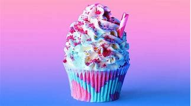
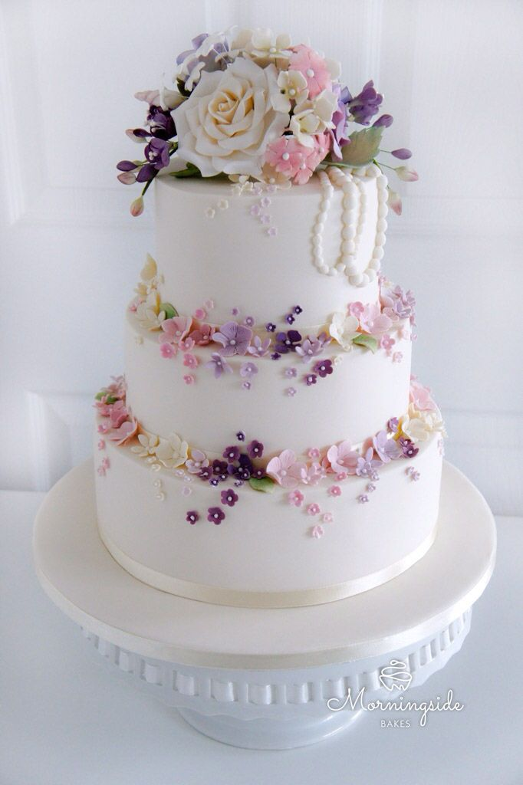

fondant cake
Fondant icing, also commonly referred to simply as fondant, is an icing used to decorate or sculpt cakes and pastries. It is made from sugar, water, gelatin, vegetable fat or shortening, and glycerol. It does not have the texture of most icings; rolled fondant is akin to stiff clay, while poured fondant is a thick liquid.

Mirror Glass Cake
a shiny cake made by pouring a delicious chocolate sugar glaze that has gelatin in it over a frozen cake, called an entremet (oooh so french). You can use a variety of colors and shaped molds to make the frozen cake to get that super reflective surface which is how the cake got it’s nameGel cake
It is basically a type of emulsifier that commonly used for baking purposes. Emulsifiers are ingredients that can be found in the nature, which possess the ability to improve food system stability.

Galaxy Cupcakes
Galaxy Cupcakes are made easy with no colored buttercream trick. No more mess and fuss, these Galaxy Cupcakes are super delicious and very easy to make. These Galaxy Cupcakes are so pretty and tasty, that is perfect for themed parties, and is a hit with kids and adults alike!Photo cake
Photo cakes are often used for birthday celebrations. If you've been to a children's birthday party anytime in the past few years, you've probably seen a photo cake. This type of cake has a photograph of the guest of honor imprinted on top.Spider Cake
The outside of the Spider Cake gets golden brown and slightly crisp in the oven while the inside stays tender. One of the unique attributes of the Spider CakeBarbie doll cake
The beautiful and attractive Barbie doll is dearly adored by little girls. They love to play with them all day long and have fun. Take your daughter's love for Barbie to a whole new level by ordering good-looking and yummy Barbie cake at our website for her birthday celebration. She will be thrilled and relish every bite of the cake with great fun.
